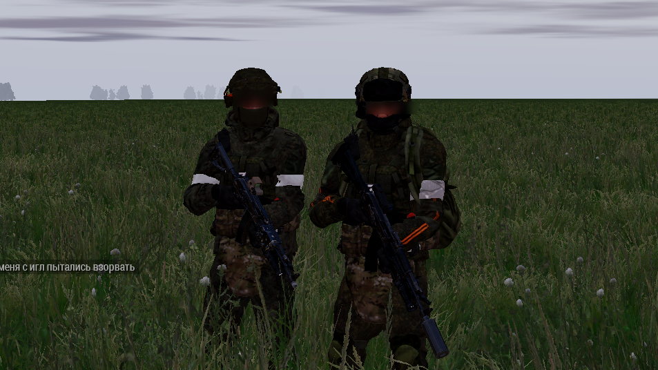
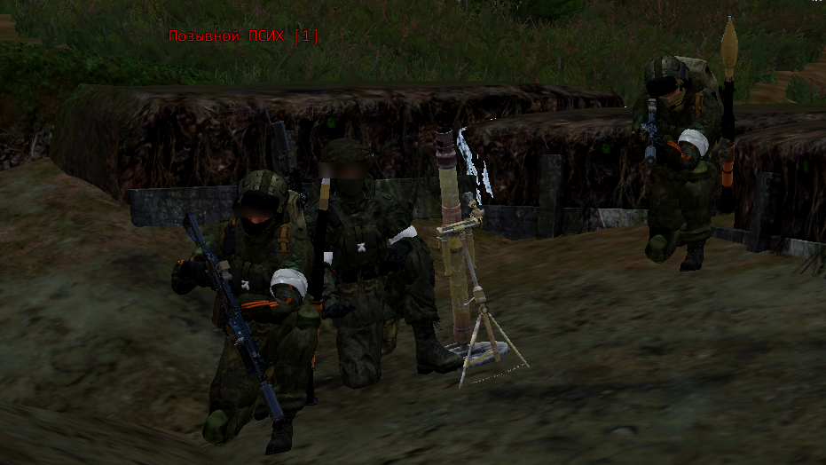
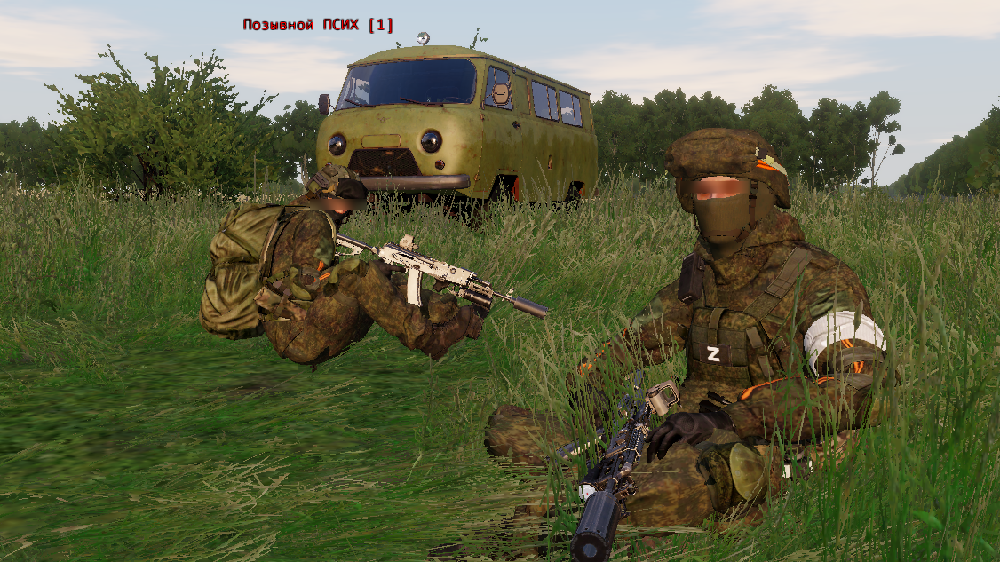

КТО МЫ?
Мы - лучший многофункциональный отряд в ARMA 3. У нас служат лучшие стрелки, командиры, пулемётчики, операторы БПЛА, всё на славу РОССИИ. У нас можно: обучиться у топовых инструкторов, имеющих огромный опыт в онлайн-боях на просторах ARMA 3, влиться в дружный и приятный коллектив наших бойцов, подниматься по карьерной лестнице.
ИСТОРИЯ ПОДРАЗДЕЛЕНИЯ
1. ОСНОВАНИЕ ПОДРАЗДЕЛЕНИЯ
Подразделение было основано бойцами с позывными "Псих" и "Сиплый", Сиплый был главой, а Псих его замом, подразделение работало в Roblox, но после перешло под командование Психа и стало сражаться в ARMA 3. Позже в подразделение начали приходить бойцы...
2. "БОЕВОЕ КРЕЩЕНИЕ"
В июле 2025 года отряд из самых первых бойцов подразделения выдвинулся к ЛБС (Линии Боевого Соприкосновение), был дан бой противнику, из которого наши воины вышли победителями, пускай победа была нелегка. И далее бойцы продолжили безжалостно сражаться с врагом, не зная страха, и не имея даже мысли о бегстве с поля боя.
  Ку